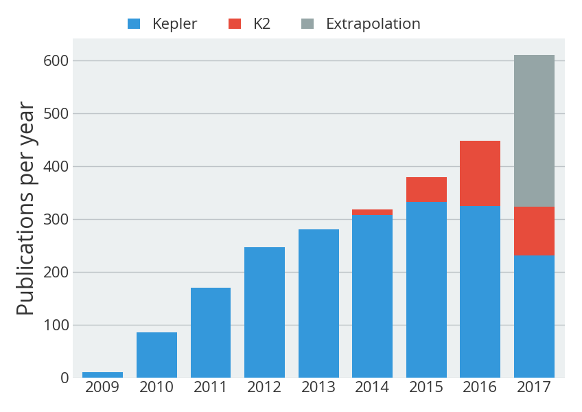
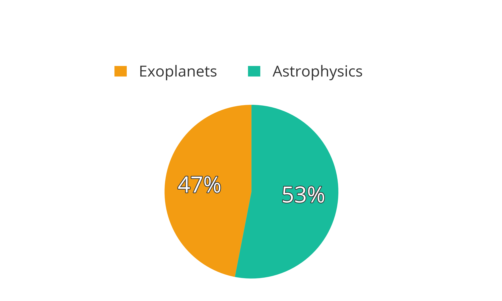

Summary
The Guest Observer Office curates a database of scientific publications pertaining to Kepler and K2. The database currently contains 1458 publications, of which 1318 are peer-reviewed. This page present a series of statistics that demonstrate the important impact of Kepler/K2 data on astronomical research.
Please contact us if you spot an error in the database, such as a missing publication.
Last update: 09 Sep 2015.
Breakdown by year & mission
The graph below shows the number of publications as a function of year and mission. The publication count for Kepler is 1408, that of K2 is 50.

View all Kepler publications » View all K2 publications » View all publications »
Breakdown by subject
Both Kepler and K2 data have been used for scientific applications that reach far beyond exoplanet research. While 705 works relate to exoplanets (48%), a total of 753 pertain to other areas of astrophysics (52%).

View all exoplanet publications » View all astrophysics publications »
Most-cited publications
Kepler/K2 publications have cumulatively been cited 34128 times. The list below shows the most-cited publications, based on the citation count obtained from NASA ADS.
-
KEPLER PLANET-DETECTION MISSION: INTRODUCTION AND FIRST RESULTS
Borucki, William J., Koch, David, Basri, Gibor, et al.
2010Sci...327..977B 766 citations -
CHARACTERISTICS OF PLANETARY CANDIDATES OBSERVED BY KEPLER. II. ANALYSIS OF THE FIRST FOUR MONTHS OF DATA
Borucki, William J., Koch, David G., Basri, Gibor, et al.
2011ApJ...736...19B 522 citations -
PLANETARY CANDIDATES OBSERVED BY KEPLER. III. ANALYSIS OF THE FIRST 16 MONTHS OF DATA
Batalha, Natalie M., Rowe, Jason F., Bryson, Stephen T., et al.
2013ApJS..204...24B 492 citations -
KEPLER MISSION DESIGN, REALIZED PHOTOMETRIC PERFORMANCE, AND EARLY SCIENCE
Koch, David G., Borucki, William J., Basri, Gibor, et al.
2010ApJ...713L..79K 421 citations -
KEPLER INPUT CATALOG: PHOTOMETRIC CALIBRATION AND STELLAR CLASSIFICATION
Brown, Timothy M., Latham, David W., Everett, Mark E., et al.
2011AJ....142..112B 352 citations -
PLANET OCCURRENCE WITHIN 0.25 AU OF SOLAR-TYPE STARS FROM KEPLER
Howard, Andrew W., Marcy, Geoffrey W., Bryson, Stephen T., et al.
2012ApJS..201...15H 335 citations -
A CLOSELY PACKED SYSTEM OF LOW-MASS, LOW-DENSITY PLANETS TRANSITING KEPLER-11
Lissauer, Jack J., Fabrycky, Daniel C., Ford, Eric B., et al.
2011Natur.470...53L 315 citations -
KEPLER'S FIRST ROCKY PLANET: KEPLER-10B
Batalha, Natalie M., Borucki, William J., Bryson, Stephen T., et al.
2011ApJ...729...27B 266 citations -
KEPLER-16: A TRANSITING CIRCUMBINARY PLANET
Doyle, Laurance R., Carter, Joshua A., Fabrycky, Daniel C., et al.
2011Sci...333.1602D 255 citations -
GRAVITY AND LIMB-DARKENING COEFFICIENTS FOR THE KEPLER, COROT, SPITZER, UVBY, UBVRIJHK, AND SLOAN PHOTOMETRIC SYSTEMS
Claret, A., Bloemen, S.
2011A&A...529A..75C 249 citations -
OVERVIEW OF THE KEPLER SCIENCE PROCESSING PIPELINE
Jenkins, Jon M., Caldwell, Douglas A., Chandrasekaran, Hema, et al.
2010ApJ...713L..87J 243 citations -
THE FALSE POSITIVE RATE OF KEPLER AND THE OCCURRENCE OF PLANETS
Fressin, François, Torres, Guillermo, Charbonneau, David, et al.
2013ApJ...766...81F 239 citations -
ARCHITECTURE AND DYNAMICS OF KEPLER'S CANDIDATE MULTIPLE TRANSITING PLANET SYSTEMS
Lissauer, Jack J., Ragozzine, Darin, Fabrycky, Daniel C., et al.
2011ApJS..197....8L 237 citations -
KEPLER ASTEROSEISMOLOGY PROGRAM: INTRODUCTION AND FIRST RESULTS
Gilliland, Ronald L., Brown, Timothy M., Christensen-Dalsgaard, Jørgen, et al.
2010PASP..122..131G 237 citations -
GRAVITY MODES AS A WAY TO DISTINGUISH BETWEEN HYDROGEN- AND HELIUM-BURNING RED GIANT STARS
Bedding, Timothy R., Mosser, Benoit, Huber, Daniel, et al.
2011Natur.471..608B 207 citations -
KEPLER-9: A SYSTEM OF MULTIPLE PLANETS TRANSITING A SUN-LIKE STAR, CONFIRMED BY TIMING VARIATIONS
Holman, Matthew J., Fabrycky, Daniel C., Ragozzine, Darin, et al.
2010Sci...330...51H 205 citations -
MODULES FOR EXPERIMENTS IN STELLAR ASTROPHYSICS (MESA): PLANETS, OSCILLATIONS, ROTATION, AND MASSIVE STARS
Paxton, Bill, Cantiello, Matteo, Arras, Phil, et al.
2013ApJS..208....4P 188 citations -
INITIAL CHARACTERISTICS OF KEPLER LONG CADENCE DATA FOR DETECTING TRANSITING PLANETS
Jenkins, Jon M., Caldwell, Douglas A., Chandrasekaran, Hema, et al.
2010ApJ...713L.120J 186 citations -
HABITABLE ZONES AROUND MAIN-SEQUENCE STARS: NEW ESTIMATES
Kopparapu, Ravi Kumar, Ramirez, Ramses, Kasting, James F., et al.
2013ApJ...765..131K 183 citations -
THE OCCURRENCE RATE OF SMALL PLANETS AROUND SMALL STARS
Dressing, Courtney D., Charbonneau, David
2013ApJ...767...95D 180 citations
Most-active authors
The entries in the publication database have been authored and co-authored by a total of 2729 unique author names. Here we list the most-active authors, defined as those with six or more first-author publications in our database.
-
Balona, L (25 publications)
-
Kipping, D (17 publications)
-
Murphy, S (9 publications)
-
Kane, S (9 publications)
-
Chaplin, W (9 publications)
-
Molenda-Zakowicz, J (9 publications)
-
Hekker, S (9 publications)
-
Steffen, J (9 publications)
-
Baran, A (9 publications)
-
Huber, D (8 publications)
-
Kato, T (8 publications)
-
Ostensen, R (8 publications)
-
Stello, D (8 publications)
-
Savanov, I (7 publications)
-
Mosser, B (7 publications)
-
Armstrong, D (7 publications)
-
Ramsay, G (7 publications)
-
Silva Aguirre, V (7 publications)
-
Scaringi, S (7 publications)
-
Sanchis-Ojeda, R (7 publications)
-
Gilliland, R (7 publications)
-
Tkachenko, A (7 publications)
-
Wang, J (7 publications)
-
Corsaro, E (6 publications)
-
Gaidos, E (6 publications)
-
Barclay, T (6 publications)
-
Campante, T (6 publications)
-
Dawson, R (6 publications)
-
Lissauer, J (6 publications)
-
Lillo-Box, J (6 publications)
-
Colon, K (6 publications)
-
Metcalfe, T (6 publications)
-
Borucki, W (6 publications)
-
Bonomo, A (6 publications)
-
Mathur, S (6 publications)
-
Rappaport, S (6 publications)
-
Santerne, A (6 publications)